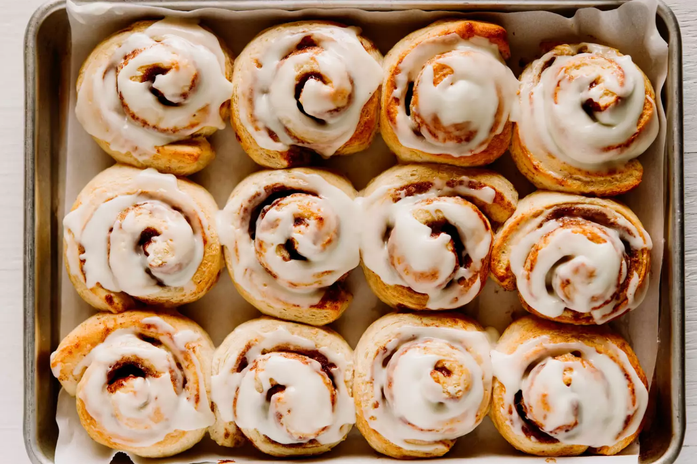

Juicers

Ingredients
- 1/4 cup plus 1 1/2 teaspoons shortening, more as needed
- 3 cups self-rising flour
- 1 cup milk
- 1/2 cup unsalted butter or margarine, softened
- 1/2 cup sugar
- 1/2 cup firmly packed brown sugar
- 1 tablespoon ground cinnamon
- 3/4 cup coarsely chopped pecans, optional
For the vanilla glaze
- 1 1/4 cups confectioners' sugar, sifted
- 3 tablespoons milk
- 1/4 teaspoon pure vanilla extract
Steps
- Gather the ingredients. (duh)
- Heat the oven to 375 F (190 C / Gas 5). Butter a 9 x 13 x 2-inch baking pan.
- Cut shortening into flour with pastry blender until the mixture resembles coarse meal. Add 1 cup of milk, stirring until dry ingredients are moistened. Turn dough out onto a floured surface and knead lightly, about 3 to 5 times.
- Roll the dough into a 20 x 14-inch rectangle; spread the softened butter on dough, leaving a border of about 1/2 inch.
- Combine the granulated sugar, brown sugar, and cinnamon in a bowl; mix well. Sprinkle the sugar mixture over the butter. Top with pecans and raisins, if using.
- Beginning at long side, roll up jelly-roll fashion; press edges and ends together securely.
- Cut the roll into 1-inch slices; place cut-side down in the prepared baking pan. Bake at 375 F for 20 to 25 minutes.
- Combine the confectioners' sugar with the 3 tablespoons of milk and the vanilla; drizzle over warm rolls.